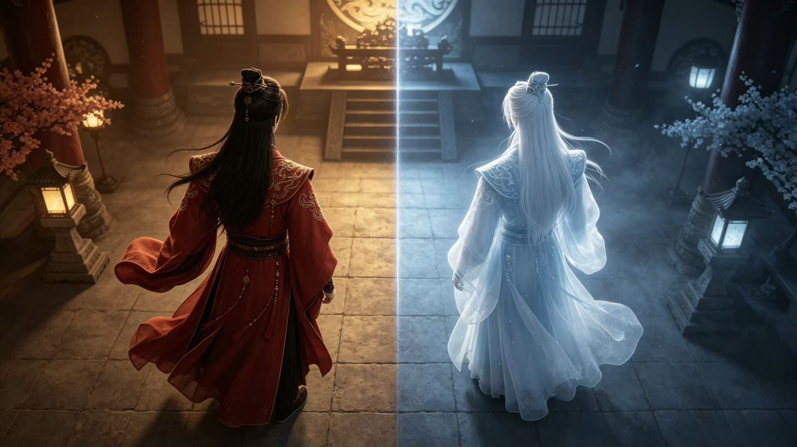

符师·阳 阳界
操控实体机关，使用镇符固定平台、燃符焚烧藤蔓，负责实际操作。
GAMEPLAY PROTOTYPE / 01
中式双人双界合作解谜

01 / DESIGN OVERVIEW
《符影双生》是一款以“中式传统法术世界”为背景的第三人称双人双端合作解谜游戏。两名玩家分别身处“阳界”与“阴界”，拥有完全不对称的视角与能力，必须通过信息互通与跨空间交互，才能共同破解机关、推进关卡。
02 / PLAYABLE PROTOTYPE
03 / ASYMMETRIC CO-OP
操控实体机关，使用镇符固定平台、燃符焚烧藤蔓，负责实际操作。
查看灵界信息，使用引符引导鬼魂、显符显现隐藏路径，负责提供提示。
04 / DESIGN PILLARS
两界结构一致但内容不同，形成强信息差，必须高频沟通。
单人无法通关，所有谜题需阴阳能力配合才能解开。
以符箓、鬼魂、阵法、四象八卦构建完整中式法术世界观。
从理解、应用、组合到上强度，难度平滑上升。
05 / LEVEL FLOW
基础操作教学，理解阴阳双界与基础符术。
能力过渡，开始双人简单配合。
四象机关组合，双人分工解谜。
五层复合谜题，融合翻转、跨界交互。
06 / PLAYTEST
优化方向：强化倒置空间提示，简化四象引导。
07 / MY CONTRIBUTION